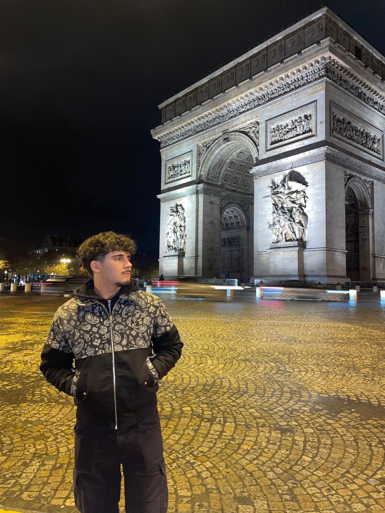

Landing page
Una pagina completa per presentare attività, servizi, contatti, orari e posizione.
Web design & sviluppo
Aiuto piccoli business, locali e progetti creativi ad avere una presenza online più professionale, chiara e facile da usare.

Sono Stefano Ferraro, ho 20 anni e sono uno studente di informatica. Ho studiato presso l’Istituto Torricelli di Milano, dove ho approfondito programmazione, basi di dati, reti e sviluppo software.
Nel tempo ho sviluppato un forte interesse per il web design, la comunicazione digitale e la creazione di siti moderni per attività locali, brand e piccoli progetti.
Mi piace unire competenze tecniche e gusto visivo: non mi interessa solo creare un sito che funzioni, ma anche costruire un’esperienza chiara, ordinata e coerente con l’identità di chi la usa.
Oltre all’informatica, sono appassionato di tecnologia, design, contenuti digitali, brand emergenti e progetti creativi.
Soluzioni su misura per chi vuole comparire online in modo professionale, senza complicazioni inutili.
Una pagina completa per presentare attività, servizi, contatti, orari e posizione.
Rinnovo siti esistenti rendendoli più moderni, ordinati e adatti al mobile.
Creo pagine con uno stile visivo forte per brand, prodotti e progetti creativi.
Esempi e progetti in corso. Ogni card riflette uno stato reale del lavoro.
Streetwear brand redesign
Redesign demo per un brand streetwear, con focus su estetica, identità visiva e presentazione dei prodotti.
View projectLocal business website
Nuova landing page per un’attività locale. Il progetto verrà aggiunto appena completato.
In progressCreative brand website
Nuovo sito per brand o progetto creativo. Sezione riservata ai prossimi lavori.
In progressObiettivi, pubblico, contenuti e riferimenti visivi: partiamo da una base chiara.
Definisco flusso delle sezioni e gerarchia delle informazioni prima del design finale.
Stile coerente, responsive e codice pulito; revisioni in base al tuo feedback.
Controllo finale, ottimizzazioni leggere e messa online (es. GitHub Pages o hosting concordato).
Scrivimi per una prima call o un preventivo: rispondo in tempi ragionevoli.